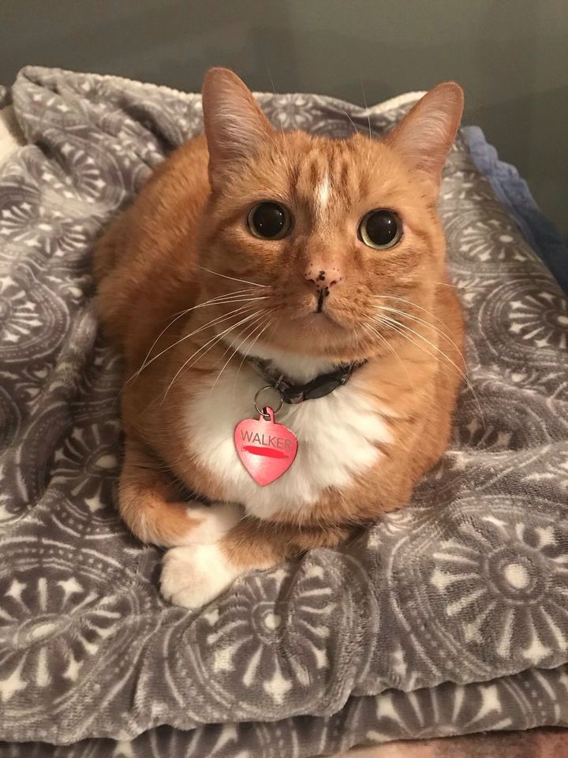
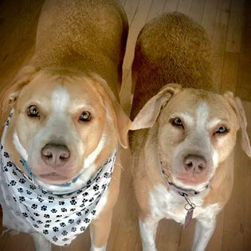
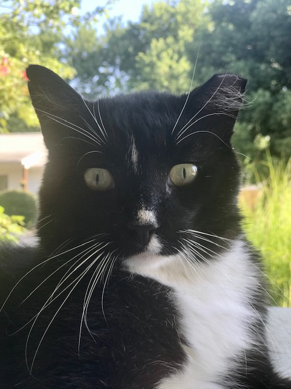

Our Story
Arrow Bridge Rescue & Rehabilitation Sanctuary has always been my dream. Recently, it became my reality. In 2009, I began rescuing animals in need. Walker was too young to be away from his mother when he was rescued. Feeding him was tricky at first, but as you can see he has grown into a plump and happy old man over the past eleven years! Walker is diagnosed with FLUTD (Feline Lower Urinary Tract Disease), but lives a normal, happy life with the assistance of prescription food and the occasional antibiotic. He is always the undisputed alpha of the pack, and everyone abides by his rules.
Walker
Watson was found in 2010 on a freezing winter day, trying to keep warm by hiding in and around the engine of a Pattonville firetruck. Thankfully, he was found by a kind fireman before he was injured. It was a rough go between Watson and Walker at first, but they have grown to be good buddies over the years. Watson is a kind and gentle soul who easily accepts all who are in need.

Watson
In 2014, I read the story of a retired racing greyhound who was in danger of being euthanized due to his retirement. He was no longer valuable to his owners or to the race track, so he became disposable. It was love at first sight, but... plot twist: Hercules Bones was located all the way in Florida! I teamed up with a wonderful greyhound organization here in St. Louis, and two weeks later four-year-old Hercules Bones was on the road to his new foster home with me. Fast-forward about two months, and I had already experienced my first “foster fail”. Hercules Bones was with me for the long haul. We built an amazing, trusting relationship very quickly and soon, he was my very best friend. Unfortunately, Mr. Bones only had about one healthy year before he began having significant medical problems. Thus, I began my journey in caring for dogs with medical and special needs in 2015. Hercules had a number of baffling symptoms, and was finally diagnosed with HGEC (Hemorrhagic Gastroenteritis Colitis). He had many bouts of bloody diarrhea, bloody vomit, pancreatitis, and ulcers in his upper and lower intestines. One early morning, in July of 2017, Hercules looked at me with resignation and defeat in his eyes after another heartbreaking night. We tried everything, but we just couldn’t keep him well. I called our wonderful vet, Dr. Randy Jones at Cross Keys Animal Clinic, and told him that it was time. I snuggled with my boy until it was time to go, and he crossed peacefully over the Rainbow Bridge a couple of hours after that dreaded phone call. I will forever be thankful for the three short years we spent together, as he is my reason for founding Arrow Bridge. Rest easy, my grey. All of this is for you.

Hercules Bones
In September of 2017, I read yet another emotional story of a four-year-old dog that had been in a shelter in rural Arkansas her entire life. She had never known anything but a concrete pin, and had never had a home or a person to call her own. She had recently come to Missouri and was scheduled to get the medical care that she desperately needed. Still emotional from the loss of Hercules, I was unsure if my heart could handle it yet. However, I felt a pull and a calling, and I knew Hercules would want me to help other animals like him. The next week, I met sweet Lira. She walked slowly toward me with pain in her eyes, and I immediately knew she was mine. Within a few minutes, I was a sobbing mess while trying to convey to the shelter worker that I would take her. I brought her home that Friday. On Saturday, I received a phone call stating that Laker, Lira’s brother, had also suffered the same unfortunate life and was very depressed in his sister’s absence. It was suggested that I bring Lira to visit Laker, to see if that would help him perk up. There are no words to accurately describe how amazing it was when they reunited. It was clear that they needed each other. Can you guess how this story ends? It ends with me sobbing (again) and coming home with two dogs instead of one. On their freedom ride home, I knew that I had made the right decision. The twins were stuck like glue, and have been ever since! Little did I know, I was in for the biggest rescue challenge of my life. Laker and Lira had chronic and untreated ear infections that led us to infinite vet visits and specialists. After many unsuccessful treatment plans, they weren’t getting better and were constantly in severe pain. In December of 2017, two months after adopting them, the twins were deemed candidates for double TECA (Total Ear Canal Ablation) and double Bulla Osteotomy surgeries. This meant that each dog needed four major surgeries; two in each ear. This also meant that the surgery bills were astronomical. My heart knew they were worth it, so I set out to raise funds toward the surgeries that would forever change the lives of two rural mutts who finally had a fighting chance. Amazingly, we were blessed with donations from our family, friends, and community. It was still necessary to provide thousands of dollars out-of-pocket, and their month-long recovery was more than challenging... but I would do it all over again if I had the choice. Due to their untreated infections and subsequent surgeries, Laker and Lira are both deaf and have no ear holes. However, their understanding of basic ASL is heartwarming. They currently know and respond to the ASL signs for eat, potty, play, car, bed, sit, and walk. They are now pain-free, and living their best doggy lives!
Laker & Lira
Sugar Pig, aka The Notorious P.I.G., joined Arrow Bridge in March of 2019. Sugar Pig was caught in the middle of a divorce, and was no longer wanted by her original owner. She was unable to be cared for by either party, and was therefore seeking a new place to live out her glory days. We think Pig is about eleven. With the average lifespan of a bulldog being eight-ten years old, she is rocking the elderly life. She had a litter of puppies at some point in her past, and was attacked by another dog which resulted in a permanent limp. She has several tumors throughout her body, which have not been biopsied due to her care plan. Sugar Pig has significant arthritis; in fact, she has no cartilage remaining in her elbow joints which cause them to rub bone-on-bone when she moves. She has progressive cataracts in both eyes, which affect her vision and depth perception. Alongside all of her struggles, Sugar Pig has enough spunk and sass to last a lifetime. She often uses her snout to flip her water bowl over and throws temper tantrums on the ground if her daily demands aren’t being met. Due to her old age and medical complexities, Sugar Pig is on a pain-management plan that focuses heavily on comfort measures.

Sugar Pig
Figaro showed up last winter. He was emaciated, freezing, and terrified of everything and everyone. We provided him with heated shelter, food, water, and general care (flea/tick preventative, etc.) while coaxing him to trust us. After 2-3 months, we were able to come within a few feet of him and even touch him briefly at times. Now, he is friendlier with familiar adults but still refuses to come inside or be handled. We don't know where he came from, but are thankful he is cared for and healthy now.
Figaro
Now that you’ve met some of the past and present rescues, I hope you have fallen in love with them just as much as I have! My future vision for Arrow Bridge is to continue caring for dogs who require significant medical assistance and/or hospice care in St. Charles County, with the support of our wonderful and close-knit community. Someday, we aspire to expand to a rescue facility in order to reach more dogs in need.
From the bottom of our hearts, we thank you for your continued support, love, and devotion to our mission. Without you, Arrow Bridge would not exist. We are forever indebted to your kindness.
- Katlyn Kinkade, Founder
*Please note that we do not currently operate out of a facility. We take only high-needs/hospice cases pending appropriate funds, space, and/or fosters are available.